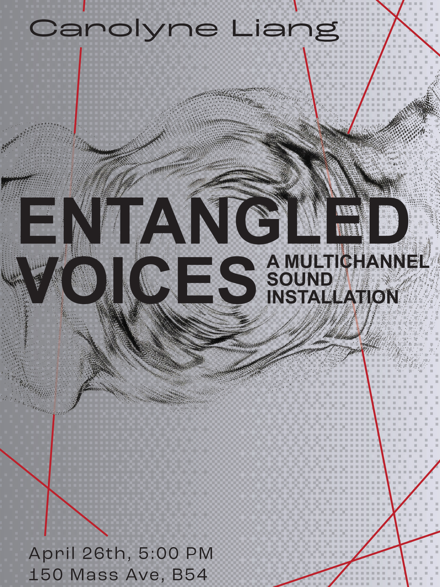

001
Entangled
Voices
Boston

Concept
Entangled Voices explores the physical and spatial dimensions of sound through a rope sculpture and cross-string poster designs that visually anchor its interactive, multichannel listening environment. Custom hardware sensors connect bodily movement to a 12-channel spatial system, allowing sound to behave as a shifting material within the installation. Built with Max/MSP, RNBO, Ableton Live, and spat5, the work turns listening into an active negotiation between gesture, distance, and the surrounding architecture.
System
- Audio
- 12-channel spatial output
- Interaction
- Custom hardware sensors
- Software
- Max/MSP, RNBO, Ableton Live, spat5
